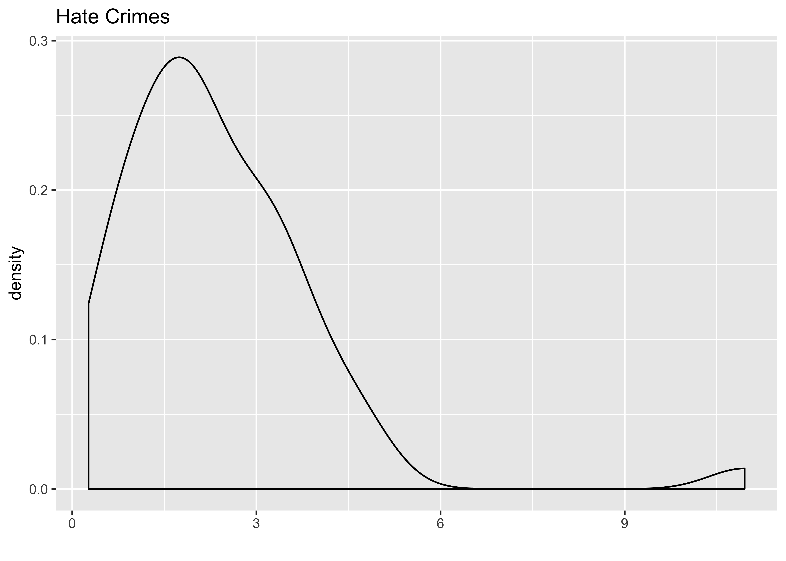
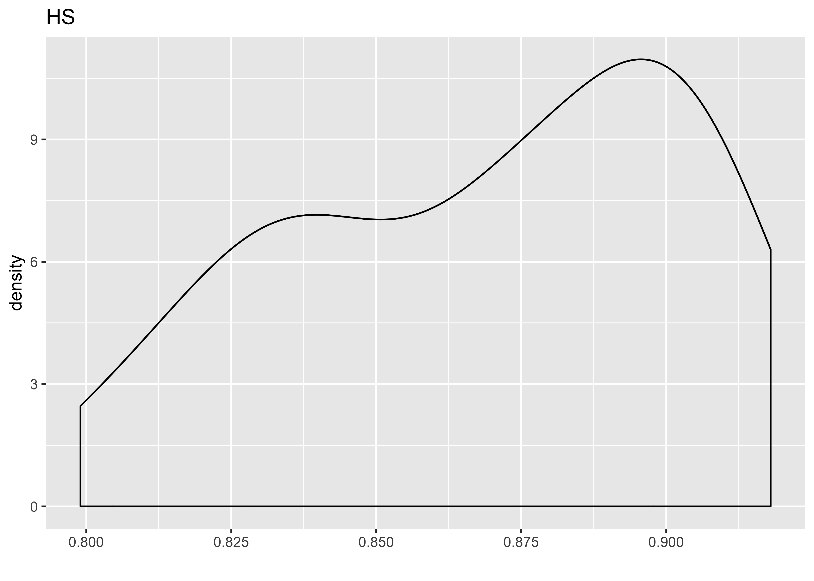
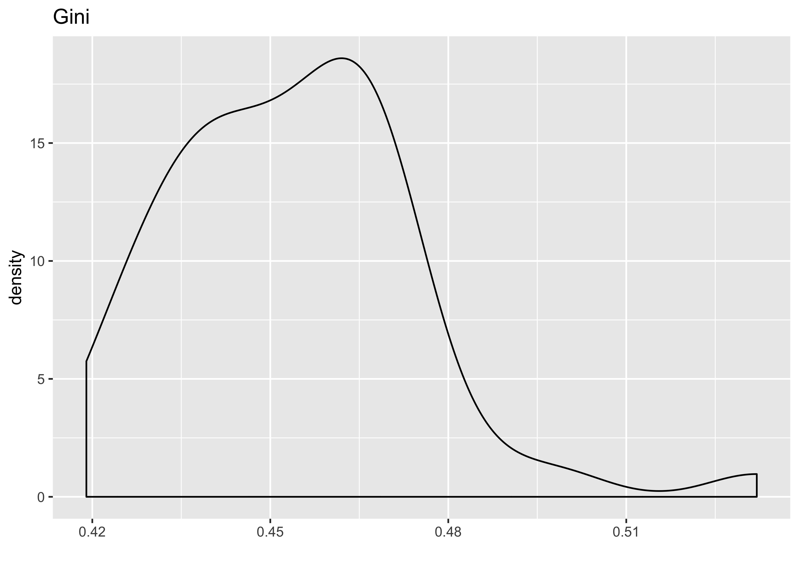
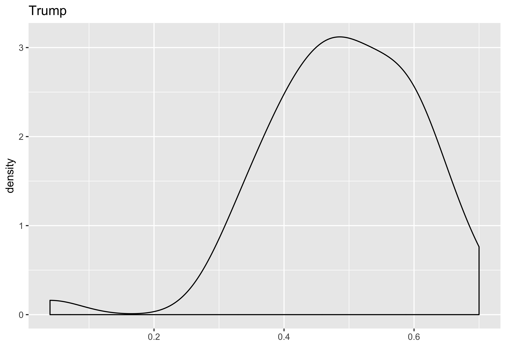
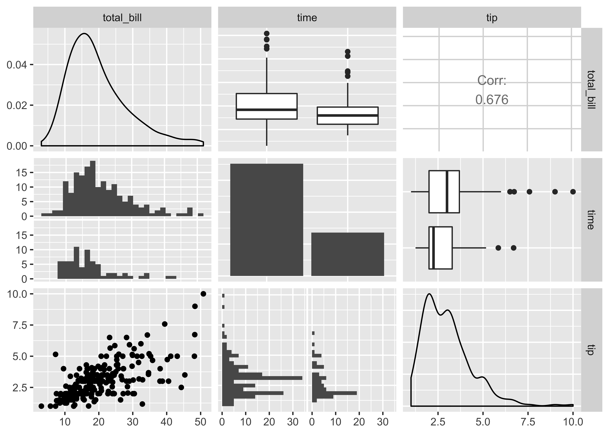

CONJ620: CM 2.4
Multiple linear regression
Alison Hill, Chester Ismay, Albert Y. Kim
7/26/2018
1 Logistics
- A complete knitted
htmlfile is due on Sakai by beginning of class Tuesday July 31th (2:30pm). - This lab is structured to be similar to this Case Study on Seattle House Prices from ModernDive. Please open it and follow along with both datasets!
- The structure of this lab is as follows:
- In class, we’ll walk through the univariate EDA steps for 3 key variables:
- the outcome variable
- a numeric predictor variable
- In the lab, you’ll do:
- First 20 min: interpret EDA Part I (univariate)
- Next 20 min: do EDA Part II (bivariate)
- Last 20 min: do lm, attempt to interpret three values that define the regression plane
- On your own, you’ll do:
- Analysis of observed/fitted values and residuals following ModernDive
- Residual analysis following ModernDive
2 Overview
We’ll work with data from this 538 article. In the article, the authors describe collecting data on key socioeconomic factors for each state, including indicators for:
- education (percent of adults 25 and older with at least a high school degree, as of 2009)
- diversity
- percent nonwhite population (2015), and
- percent noncitizen population (2015).
- geographic heterogeneity (percent population in metropolitan areas, 2015)
- economic health
- median household income,
- 2016 seasonally adjusted unemployment (September 2016),
- percent poverty among white people (2015), and
- income inequality (as measured by the Gini index, 2015)
- percent of the population voted for Donald Trump.
In this lab, we’ll use a subset of these variables to predict hate crimes in the US. There are two possible outcome variables here: (1) pre-election data from the FBI, and (2) post-election data from the Southern Poverty Law Center. We’ll focus on the pre-election data in this lab.
3 The Data
This data is included in the fivethirtyeight package in the hate_crimes data frame, which we’ll refer to as the “Hate crimes” dataset. You can use ?hate_crimes to read more about it and the variables.
You’ll need to load these packages to do this lab:
library(fivethirtyeight) # new to you!
library(skimr)
library(tidyverse)
library(GGally) # new to you!We’ll use hate_crimes to demonstrate multiple regression with:
- A numerical outcome variable \(y\), in this case average annual hate crimes per 100,000 population, FBI, 2010-2015 (
avg_hatecrimes_per_100k_fbi) - Three possible explanatory variables:
- A first numerical explanatory variable \(x_1\): percent of adults in each state 25 and older with at least a high school degree (2009) (
share_pop_hs) - A second numerical explanatory variable \(x_2\): each state’s income inequality (as measured by the Gini index, 2015) (
gini_index) - A third numerical explanatory variable \(x_3\): each state’s percent population that voted for Donald Trump (
share_vote_trump). At a later stage, we’ll convert this variable to a factor.
- A first numerical explanatory variable \(x_1\): percent of adults in each state 25 and older with at least a high school degree (2009) (
4 EDA, Part I (⏰ 20 min)
Recall that a new exploratory data analysis involves three things:
- Looking at the raw values.
- Computing summary statistics of the variables of interest.
- Creating informative visualizations.
General functions we use below- add narrative to interpret each!:
dplyr::glimpse()skimr::skim()ggplot2::ggplot()geom_histogram()orgeom_density()for numeric continuous variablesgeom_bar()orgeom_col()for categorical variables
At this stage, you may also find your want to use filter, mutate, arrange, select, or count. Let your questions lead you! Feel free to add onto the EDA that follows.
4.1 Look at the raw values
- How many states are here? Are they all “states”?
glimpse(hate_crimes)Observations: 51
Variables: 12
$ state <chr> "Alabama", "Alaska", "Arizona", "A...
$ median_house_inc <int> 42278, 67629, 49254, 44922, 60487,...
$ share_unemp_seas <dbl> 0.060, 0.064, 0.063, 0.052, 0.059,...
$ share_pop_metro <dbl> 0.64, 0.63, 0.90, 0.69, 0.97, 0.80...
$ share_pop_hs <dbl> 0.821, 0.914, 0.842, 0.824, 0.806,...
$ share_non_citizen <dbl> 0.02, 0.04, 0.10, 0.04, 0.13, 0.06...
$ share_white_poverty <dbl> 0.12, 0.06, 0.09, 0.12, 0.09, 0.07...
$ gini_index <dbl> 0.472, 0.422, 0.455, 0.458, 0.471,...
$ share_non_white <dbl> 0.35, 0.42, 0.49, 0.26, 0.61, 0.31...
$ share_vote_trump <dbl> 0.63, 0.53, 0.50, 0.60, 0.33, 0.44...
$ hate_crimes_per_100k_splc <dbl> 0.12583893, 0.14374012, 0.22531995...
$ avg_hatecrimes_per_100k_fbi <dbl> 1.8064105, 1.6567001, 3.4139280, 0...- How many rows do we have per state? Is there ever more than 1 year per state?
hate_crimes %>%
count(state, sort = TRUE)# A tibble: 51 x 2
state n
<chr> <int>
1 Alabama 1
2 Alaska 1
3 Arizona 1
4 Arkansas 1
5 California 1
6 Colorado 1
7 Connecticut 1
8 Delaware 1
9 District of Columbia 1
10 Florida 1
# ... with 41 more rows4.2 Compute summary statistics
Let’s select just the variables we need first.
hate_demo <- hate_crimes %>%
select(state, avg_hatecrimes_per_100k_fbi, share_pop_hs, gini_index,
share_vote_trump) Following the narrative in ModernDive, write a few sentences describing the output here.
skim(hate_demo)Skim summary statistics
n obs: 51
n variables: 5
Variable type: character
variable missing complete n min max empty n_unique
state 0 51 51 4 20 0 51
Variable type: numeric
variable missing complete n mean sd p0 p25 p50
avg_hatecrimes_per_100k_fbi 1 50 51 2.37 1.71 0.27 1.29 1.99
gini_index 0 51 51 0.45 0.021 0.42 0.44 0.45
share_pop_hs 0 51 51 0.87 0.034 0.8 0.84 0.87
share_vote_trump 0 51 51 0.49 0.12 0.04 0.41 0.49
p75 p100 hist
3.18 10.95 ▇▇▅▁▁▁▁▁
0.47 0.53 ▅▅▇▇▁▁▁▁
0.9 0.92 ▂▅▅▃▃▅▇▆
0.57 0.7 ▁▁▁▃▇▇▆▃4.3 Create informative visualizations
First let’s look at the outcome variable:
# Density of hate crimes (DV):
ggplot(hate_demo, aes(x = avg_hatecrimes_per_100k_fbi)) +
geom_density() +
labs(x = "", title = "Hate Crimes")
Next we’ll look at our three explanatory variables as continuous:
# Histogram of share_pop_hs (IV):
ggplot(hate_demo, aes(x = share_pop_hs)) +
geom_density() +
labs(x = "", title = "HS")
# Histogram of gini (IV):
ggplot(hate_demo, aes(x = gini_index)) +
geom_density() +
labs(x = "", title = "Gini")
# Histogram of trump (IV):
ggplot(hate_demo, aes(x = share_vote_trump)) +
geom_density() +
labs(x = "", title = "Trump")
Let’s make share_vote_trump a categorical variable:
hate_demo <- hate_demo %>%
mutate(
cat_trump = case_when(
share_vote_trump < .5 ~ "less than half",
TRUE ~ "more than half"
)) %>%
mutate(cat_trump = as.factor(cat_trump)) %>%
select(-share_vote_trump)Following the narrative in ModernDive, write a few sentences describing the output here.
5 EDA, Part II (⏰ 20 min)
Part I of this EDA was univariate in nature in that we only considered one variable at a time. The goal of modeling, however, is to explore relationships between variables. Specifically, we care about bivariate relationships between pairs of variables. But with 1 outcome and 3 explanatory variables, that means we have \(3 \times 2 = 6\) correlations to compute.
For simple regression, we calculated correlation coefficients between the outcome and explanatory variables. For multiple regression, your EDA should involve multiple correlation coefficients. We’ll use the cor() function to do this. You’ll want to first select only numeric variables first.
Use this code as an example:
data %>%
select(-my_char_var, -my_factor_var) %>%
cor()To produce this output:
avg_hatecrimes_per_100k_fbi share_pop_hs
avg_hatecrimes_per_100k_fbi 1 NA
share_pop_hs NA 1.0000000
gini_index NA -0.5920518
gini_index
avg_hatecrimes_per_100k_fbi NA
share_pop_hs -0.5920518
gini_index 1.0000000Lots of NA correlations though! Try this code instead:
data %>%
select(-my_char_var, -my_factor_var) %>%
cor(., use = "pairwise.complete.obs")You could do the same thing in the corrr package, using the correlate function:
library(corrr)
data %>%
select(-my_char_var, -my_factor_var) %>%
correlate()We could actually do all of this with one function! We’ll use GGally::ggpairs() to create a pairwise comparison of multivariate data. This includes what is known as a “Generalized Pairs Plot,” which is an improved version of a scatterplot matrix. This function provides two different comparisons of each pair of columns, and displays either the density (continuous numeric) or count (factors) of the respective variable along the diagonal. You can read more about the function and package here.
There are three pieces to the output: lower, upper, and diag. Read more about the sections of the matrix here.
Here is how you can use the function:
data %>%
select(-my_char_var) %>%
ggpairs()And here is some demo output of how to use it using a dataset called tips:
data(tips, package = "reshape")
tips %>%
select(total_bill, time, tip) %>%
ggpairs()
And it builds from ggplot2, so you can add aesthetic mappings for color, etc. Hurray!
tips %>%
ggpairs(., aes(color = sex),
columns = c("total_bill", "time", "tip"))
Following this narrative in ModernDive, write a few sentences describing the output here.
6 Multiple regression models (⏰ 20 min)
Do the following:
- Fit a multiple regression model and get the regression table. You’ll be assigned one of the following models:
- Two numerical predictors with a
+ - One numerical / one categorical with parallel slopes
- One numerical / one categorical interaction model
- Two numerical predictors with a
*
- Two numerical predictors with a
- Sketch out the modeling equation for your model (not in your R Markdown)
- Interpret the output from the regression table (in complete sentences, but you may use bullet points to organize)
- Compare the coefficients from your multiple regression model to the “simple” correlation coefficients for each variable. Recall that in a simple linear regression: \[b_{x1} = r_{{x_1}y} ~\dfrac{s_y}{s_{x_1}}\]
- For those with the two numerical predictors, you may want to look into making a 3D scatterplot.
- The numerical outcome variable \(y\)
avg_hatecrimes_per_100k_fbigoes on the z-axis (vertical axis) - The two numerical explanatory variables form the “floor” axes. In this case
- The first numerical explanatory variable \(x_1\)
share_vote_trumpis on of the floor axes. - The second numerical explanatory variable \(x_2\)
gini_indexis on the other floor axis.
- The first numerical explanatory variable \(x_1\)
- The numerical outcome variable \(y\)
library(plotly)
p <- plot_ly(hate_demo, x = ~share_vote_trump, y = ~gini_index, z = ~avg_hatecrimes_per_100k_fbi) %>%
add_markers() %>%
layout(scene = list(xaxis = list(title = 'Trump'),
yaxis = list(title = 'Gini'),
zaxis = list(title = 'Hate Crimes')))
p